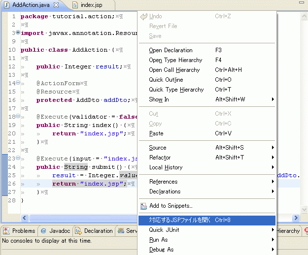
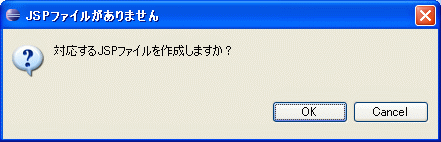
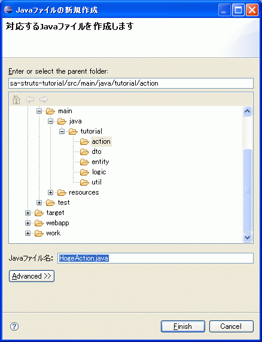
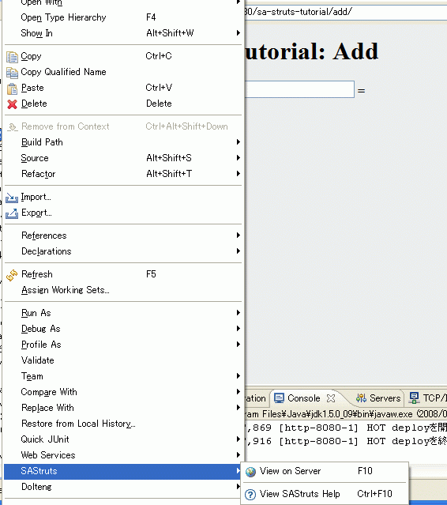
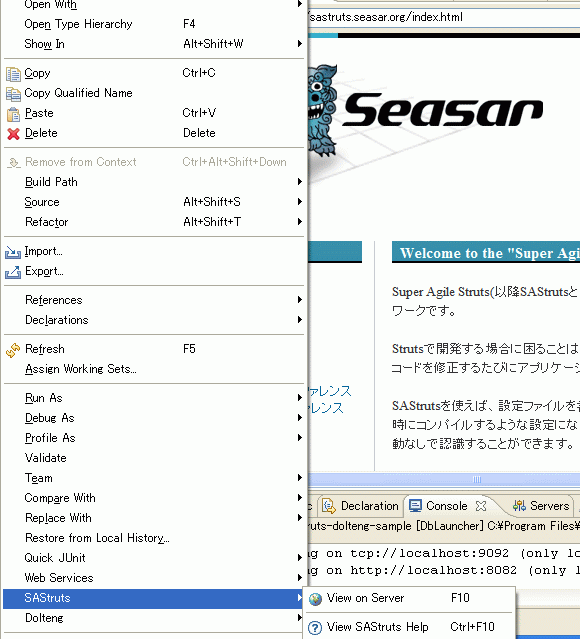

SAStrutsPlugin
Usage
Project setting
- In the Properties of your project, select "SAStruts", then specify Webapp Root.
- In the Properties of your project, select "SAStruts", then specify Main Java Source Path.
- In the Properties of your project, select "SAStruts" , then specify convention.dicon Path.
- In the Properties of your project, select "SAStruts", then specify WebServer.
- In the Properties of your project, select "SAStruts", then specify Context.
For example, in the case of Super Agile Struts Tutorial(sa-struts-tutorial), you have to specify those parameters as "/src/main//webapp", "/src/main/java", "/src/main/resouces/convention.dicon", "http://localhost:8080" and empty for Context parameter. If Context parameter is empty, Eclipse project name is used as the context name. In the case of Tutorial, sa-struts-tutorial is used.
SAStrutsPlugin obtains JSP file paths, Java file paths and root packages from Webapp Root, Main Java Source Path and convention.dicon Path, respectively. WebServer and Context parameters consist a base of the URL for View on Server feature which is described later.
Open the JSP file
In an SAStruts action source code, place the text cursor on the line where JSP file name string is present, then use the context menu or hit the shortcut key(Ctrl+8) to open the corresponding JSP file.
Creating the JSP file
- When no corresponding JSP file to open is found, a message box appears. [NOTE: The following screenshots are in Japanese. If you use a non-Japanese environment, the message will be as this: "JSP file is not found. / Create a corresponding JSP file?"]
- By clicking OK, "Create a new JSP file" wizard appears. The file name of the JSP file and the folder to save in are automatically determined, so no modification is required in most cases.
When no corresponding JSP file to open is found, you can create a new one with a wizard. The file name and the folder to save in are automatically determined, and no modification is required in most cases.


Open the JAVA file
On JSP Editor, you can open a Java source file corresponding to the JSP file via the popup menu or by a keyboard shortcut (Ctrl+8).
- If the cursor was on s:form tag, it forwards to index method of the JAVA source. If urlPatten is used, then the cursor will be on the corresponding method.
- If the cursor was on an input tag, it forwards to the corresponding JAVA method (whose name is the same as the name attribute of the tag).
- If the cursor was on the line of HTML <a> or <s:link> tag whose href attribute uses urlPattern, then it forwards to the corresponding method.
Creating the JAVA file
- When no corresponding JAVA file to open is found, a message box appears. [ For a non-Japanese environment, the message will be: "Java file is not found. / Create a corresponding Java file? ". ]
- By clicking OK, "Create a new Java file" wizard appears. The file name of the JAVA file and the folder to save in are automatically determined, so no modification is required in most cases.
When no corresponding JAVA file to open is found, you can create a new one with a wizard. The file name and the folder to save in are automatically determined, and no modification is required in most cases.


completion feature on JSP Editor
Code completion is available for properties of ActionForm and execution methods of Action on the JSP Editor of WTP.
Public field properties of the ActionForm will be shown as the completion candidates at the "property" attribute of html:text and other tags for input. Execution methods of the Action (public, return value String, no arguments and with a @Execute annnotation) will be shown as the completion candidates at the "name" attribute of html:submit and other tags for buttons.
c:foreach tag is not supported.
View on Server
Once you have started the application server, you can view how your action class is rendered through the server by just selecting the class then choosing View on Server from SAStruts context menu or by using a keyboard shortcut.
View SAStruts Help
You can show SAStruts top page by choosing View SAStruts Help from the context menu or by just using a keyboard shortcut.
